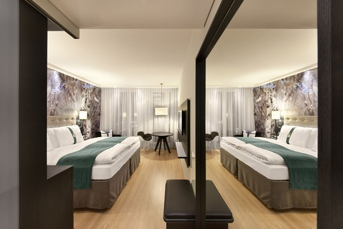

Hotel Paradis Palace

Le Fairy est situé dans la station de Saint Douglas, à 250 metres du stade pricipal.
Il propose des chambres de luxe et des suites avec connexion Internet, d'une télévision 4K par satellite et une vue sur le centre ville, la piscine ou le jardin.
Le restaurant méditerranéen sert une cuisine locale et traditionnelle. Vous trouverez également un restaurant au bord de la piscine et un restaurant de plage proposant des collations et des boissons.
Le Fairy Hotel propose des spectacles de divertissement tout les soirs. À l'hôtel, vous trouverez un exellent spa.
Un service de navette aéroport est assuré gratuitement depuis et si vous choisissez cet hotel vous aurez 2 billets gratuit pour le demi-final.
Nous parlons votre langue !
Chambres : 450